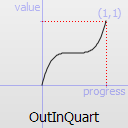
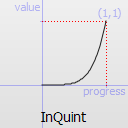
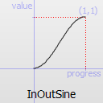
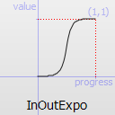
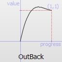

QEasingCurve Class
The QEasingCurve class provides easing curves for controlling animation. More...
| Header: | #include <QEasingCurve> |
| CMake: | find_package(Qt6 REQUIRED COMPONENTS Core) target_link_libraries(mytarget PRIVATE Qt6::Core) |
| qmake: | QT += core |
- List of all members, including inherited members
- QEasingCurve is part of Animation Framework.
Public Types
| EasingFunction | |
| enum | Type { Linear, InQuad, OutQuad, InOutQuad, OutInQuad, …, Custom } |
Public Functions
| QEasingCurve(QEasingCurve::Type type = Linear) | |
| QEasingCurve(const QEasingCurve &other) | |
| QEasingCurve(QEasingCurve &&other) | |
| ~QEasingCurve() | |
| void | addCubicBezierSegment(const QPointF &c1, const QPointF &c2, const QPointF &endPoint) |
| void | addTCBSegment(const QPointF &nextPoint, qreal t, qreal c, qreal b) |
| qreal | amplitude() const |
| QEasingCurve::EasingFunction | customType() const |
| qreal | overshoot() const |
| qreal | period() const |
| void | setAmplitude(qreal amplitude) |
| void | setCustomType(QEasingCurve::EasingFunction func) |
| void | setOvershoot(qreal overshoot) |
| void | setPeriod(qreal period) |
| void | setType(QEasingCurve::Type type) |
| void | swap(QEasingCurve &other) |
| QList<QPointF> | toCubicSpline() const |
| QEasingCurve::Type | type() const |
| qreal | valueForProgress(qreal progress) const |
| bool | operator!=(const QEasingCurve &other) const |
| QEasingCurve & | operator=(const QEasingCurve &other) |
| QEasingCurve & | operator=(QEasingCurve &&other) |
| bool | operator==(const QEasingCurve &other) const |
Related Non-Members
| QDataStream & | operator<<(QDataStream &stream, const QEasingCurve &easing) |
| QDataStream & | operator>>(QDataStream &stream, QEasingCurve &easing) |
Detailed Description
Easing curves describe a function that controls how the speed of the interpolation between 0 and 1 should be. Easing curves allow transitions from one value to another to appear more natural than a simple constant speed would allow. The QEasingCurve class is usually used in conjunction with the QVariantAnimation and QPropertyAnimation classes but can be used on its own. It is usually used to accelerate the interpolation from zero velocity (ease in) or decelerate to zero velocity (ease out). Ease in and ease out can also be combined in the same easing curve.
To calculate the speed of the interpolation, the easing curve provides the function valueForProgress(), where the progress argument specifies the progress of the interpolation: 0 is the start value of the interpolation, 1 is the end value of the interpolation. The returned value is the effective progress of the interpolation. If the returned value is the same as the input value for all input values the easing curve is a linear curve. This is the default behaviour.
For example,
QEasingCurve easing(QEasingCurve::InOutQuad);
for (qreal t = 0.0; t < 1.0; t += 0.1)
qWarning() << "Effective progress" << t << "is"
<< easing.valueForProgress(t);
will print the effective progress of the interpolation between 0 and 1.
When using a QPropertyAnimation, the associated easing curve will be used to control the progress of the interpolation between startValue and endValue:
QPropertyAnimation animation;
animation.setStartValue(0);
animation.setEndValue(1000);
animation.setDuration(1000);
animation.setEasingCurve(QEasingCurve::InOutQuad);
The ability to set an amplitude, overshoot, or period depends on the QEasingCurve type. Amplitude access is available to curves that behave as springs such as elastic and bounce curves. Changing the amplitude changes the height of the curve. Period access is only available to elastic curves and setting a higher period slows the rate of bounce. Only curves that have "boomerang" behaviors such as the InBack, OutBack, InOutBack, and OutInBack have overshoot settings. These curves will interpolate beyond the end points and return to the end point, acting similar to a boomerang.
The Easing Curves Example contains samples of QEasingCurve types and lets you change the curve settings.
Member Type Documentation
QEasingCurve::EasingFunction
This is a typedef for a pointer to a function with the following signature:
qreal myEasingFunction(qreal progress);
enum QEasingCurve::Type
The type of easing curve.
| Constant | Value |
|---|---|
QEasingCurve::Linear | 0 |

Easing curve for a linear (t) function: velocity is constant.
| Constant | Value |
|---|---|
QEasingCurve::InQuad | 1 |

Easing curve for a quadratic (t^2) function: accelerating from zero velocity.
| Constant | Value |
|---|---|
QEasingCurve::OutQuad | 2 |

Easing curve for a quadratic (t^2) function: decelerating to zero velocity.
| Constant | Value |
|---|---|
QEasingCurve::InOutQuad | 3 |

Easing curve for a quadratic (t^2) function: acceleration until halfway, then deceleration.
| Constant | Value |
|---|---|
QEasingCurve::OutInQuad | 4 |

Easing curve for a quadratic (t^2) function: deceleration until halfway, then acceleration.
| Constant | Value |
|---|---|
QEasingCurve::InCubic | 5 |

Easing curve for a cubic (t^3) function: accelerating from zero velocity.
| Constant | Value |
|---|---|
QEasingCurve::OutCubic | 6 |

Easing curve for a cubic (t^3) function: decelerating to zero velocity.
| Constant | Value |
|---|---|
QEasingCurve::InOutCubic | 7 |

Easing curve for a cubic (t^3) function: acceleration until halfway, then deceleration.
| Constant | Value |
|---|---|
QEasingCurve::OutInCubic | 8 |

Easing curve for a cubic (t^3) function: deceleration until halfway, then acceleration.
| Constant | Value |
|---|---|
QEasingCurve::InQuart | 9 |

Easing curve for a quartic (t^4) function: accelerating from zero velocity.
| Constant | Value |
|---|---|
QEasingCurve::OutQuart | 10 |

Easing curve for a quartic (t^4) function: decelerating to zero velocity.
| Constant | Value |
|---|---|
QEasingCurve::InOutQuart | 11 |

Easing curve for a quartic (t^4) function: acceleration until halfway, then deceleration.
| Constant | Value |
|---|---|
QEasingCurve::OutInQuart | 12 |

Easing curve for a quartic (t^4) function: deceleration until halfway, then acceleration.
| Constant | Value |
|---|---|
QEasingCurve::InQuint | 13 |

Easing curve for a quintic (t^5) easing in: accelerating from zero velocity.
| Constant | Value |
|---|---|
QEasingCurve::OutQuint | 14 |

Easing curve for a quintic (t^5) function: decelerating to zero velocity.
| Constant | Value |
|---|---|
QEasingCurve::InOutQuint | 15 |

Easing curve for a quintic (t^5) function: acceleration until halfway, then deceleration.
| Constant | Value |
|---|---|
QEasingCurve::OutInQuint | 16 |

Easing curve for a quintic (t^5) function: deceleration until halfway, then acceleration.
| Constant | Value |
|---|---|
QEasingCurve::InSine | 17 |

Easing curve for a sinusoidal (sin(t)) function: accelerating from zero velocity.
| Constant | Value |
|---|---|
QEasingCurve::OutSine | 18 |

Easing curve for a sinusoidal (sin(t)) function: decelerating to zero velocity.
| Constant | Value |
|---|---|
QEasingCurve::InOutSine | 19 |

Easing curve for a sinusoidal (sin(t)) function: acceleration until halfway, then deceleration.
| Constant | Value |
|---|---|
QEasingCurve::OutInSine | 20 |

Easing curve for a sinusoidal (sin(t)) function: deceleration until halfway, then acceleration.
| Constant | Value |
|---|---|
QEasingCurve::InExpo | 21 |

Easing curve for an exponential (2^t) function: accelerating from zero velocity.
| Constant | Value |
|---|---|
QEasingCurve::OutExpo | 22 |

Easing curve for an exponential (2^t) function: decelerating to zero velocity.
| Constant | Value |
|---|---|
QEasingCurve::InOutExpo | 23 |

Easing curve for an exponential (2^t) function: acceleration until halfway, then deceleration.
| Constant | Value |
|---|---|
QEasingCurve::OutInExpo | 24 |

Easing curve for an exponential (2^t) function: deceleration until halfway, then acceleration.
| Constant | Value |
|---|---|
QEasingCurve::InCirc | 25 |

Easing curve for a circular (sqrt(1-t^2)) function: accelerating from zero velocity.
| Constant | Value |
|---|---|
QEasingCurve::OutCirc | 26 |

Easing curve for a circular (sqrt(1-t^2)) function: decelerating to zero velocity.
| Constant | Value |
|---|---|
QEasingCurve::InOutCirc | 27 |

Easing curve for a circular (sqrt(1-t^2)) function: acceleration until halfway, then deceleration.
| Constant | Value |
|---|---|
QEasingCurve::OutInCirc | 28 |

Easing curve for a circular (sqrt(1-t^2)) function: deceleration until halfway, then acceleration.
| Constant | Value |
|---|---|
QEasingCurve::InElastic | 29 |

Easing curve for an elastic (exponentially decaying sine wave) function: accelerating from zero velocity. The peak amplitude can be set with the amplitude parameter, and the period of decay by the period parameter.
| Constant | Value |
|---|---|
QEasingCurve::OutElastic | 30 |

Easing curve for an elastic (exponentially decaying sine wave) function: decelerating to zero velocity. The peak amplitude can be set with the amplitude parameter, and the period of decay by the period parameter.
| Constant | Value |
|---|---|
QEasingCurve::InOutElastic | 31 |

Easing curve for an elastic (exponentially decaying sine wave) function: acceleration until halfway, then deceleration.
| Constant | Value |
|---|---|
QEasingCurve::OutInElastic | 32 |

Easing curve for an elastic (exponentially decaying sine wave) function: deceleration until halfway, then acceleration.
| Constant | Value |
|---|---|
QEasingCurve::InBack | 33 |

Easing curve for a back (overshooting cubic function: (s+1)*t^3 - s*t^2) easing in: accelerating from zero velocity.
| Constant | Value |
|---|---|
QEasingCurve::OutBack | 34 |

Easing curve for a back (overshooting cubic function: (s+1)*t^3 - s*t^2) easing out: decelerating to zero velocity.
| Constant | Value |
|---|---|
QEasingCurve::InOutBack | 35 |

Easing curve for a back (overshooting cubic function: (s+1)*t^3 - s*t^2) easing in/out: acceleration until halfway, then deceleration.
| Constant | Value |
|---|---|
QEasingCurve::OutInBack | 36 |

Easing curve for a back (overshooting cubic easing: (s+1)*t^3 - s*t^2) easing out/in: deceleration until halfway, then acceleration.
| Constant | Value |
|---|---|
QEasingCurve::InBounce | 37 |

Easing curve for a bounce (exponentially decaying parabolic bounce) function: accelerating from zero velocity.
| Constant | Value |
|---|---|
QEasingCurve::OutBounce | 38 |

Easing curve for a bounce (exponentially decaying parabolic bounce) function: decelerating from zero velocity.
| Constant | Value |
|---|---|
QEasingCurve::InOutBounce | 39 |

Easing curve for a bounce (exponentially decaying parabolic bounce) function easing in/out: acceleration until halfway, then deceleration.
| Constant | Value |
|---|---|
QEasingCurve::OutInBounce | 40 |

Easing curve for a bounce (exponentially decaying parabolic bounce) function easing out/in: deceleration until halfway, then acceleration.
| Constant | Value | Description |
|---|---|---|
QEasingCurve::BezierSpline | 45 | Allows defining a custom easing curve using a cubic bezier spline |
QEasingCurve::TCBSpline | 46 | Allows defining a custom easing curve using a TCB spline |
QEasingCurve::Custom | 47 | This is returned if the user specified a custom curve type with setCustomType(). Note that you cannot call setType() with this value, but type() can return it. |
See also addCubicBezierSegment() and addTCBSegment().
Member Function Documentation
QEasingCurve::QEasingCurve(QEasingCurve::Type type = Linear)
Constructs an easing curve of the given type.
QEasingCurve::QEasingCurve(const QEasingCurve &other)
Construct a copy of other.
[noexcept] QEasingCurve::QEasingCurve(QEasingCurve &&other)
Move-constructs a QEasingCurve instance, making it point at the same object that other was pointing to.
[noexcept] QEasingCurve::~QEasingCurve()
Destructor.
void QEasingCurve::addCubicBezierSegment(const QPointF &c1, const QPointF &c2, const QPointF &endPoint)
Adds a segment of a cubic bezier spline to define a custom easing curve. It is only applicable if type() is QEasingCurve::BezierSpline. Note that the spline implicitly starts at (0.0, 0.0) and has to end at (1.0, 1.0) to be a valid easing curve. c1 and c2 are the control points used for drawing the curve. endPoint is the endpoint of the curve.
void QEasingCurve::addTCBSegment(const QPointF &nextPoint, qreal t, qreal c, qreal b)
Adds a segment of a TCB bezier spline to define a custom easing curve. It is only applicable if type() is QEasingCurve::TCBSpline. The spline has to start explicitly at (0.0, 0.0) and has to end at (1.0, 1.0) to be a valid easing curve. The tension t changes the length of the tangent vector. The continuity c changes the sharpness in change between the tangents. The bias b changes the direction of the tangent vector. nextPoint is the sample position. All three parameters are valid between -1 and 1 and define the tangent of the control point. If all three parameters are 0 the resulting spline is a Catmull-Rom spline. The begin and endpoint always have a bias of -1 and 1, since the outer tangent is not defined.
qreal QEasingCurve::amplitude() const
Returns the amplitude. This is not applicable for all curve types. It is only applicable for bounce and elastic curves (curves of type() QEasingCurve::InBounce, QEasingCurve::OutBounce, QEasingCurve::InOutBounce, QEasingCurve::OutInBounce, QEasingCurve::InElastic, QEasingCurve::OutElastic, QEasingCurve::InOutElastic or QEasingCurve::OutInElastic).
See also setAmplitude().
QEasingCurve::EasingFunction QEasingCurve::customType() const
Returns the function pointer to the custom easing curve. If type() does not return QEasingCurve::Custom, this function will return 0.
See also setCustomType().
qreal QEasingCurve::overshoot() const
Returns the overshoot. This is not applicable for all curve types. It is only applicable if type() is QEasingCurve::InBack, QEasingCurve::OutBack, QEasingCurve::InOutBack or QEasingCurve::OutInBack.
See also setOvershoot().
qreal QEasingCurve::period() const
Returns the period. This is not applicable for all curve types. It is only applicable if type() is QEasingCurve::InElastic, QEasingCurve::OutElastic, QEasingCurve::InOutElastic or QEasingCurve::OutInElastic.
See also setPeriod().
void QEasingCurve::setAmplitude(qreal amplitude)
Sets the amplitude to amplitude.
This will set the amplitude of the bounce or the amplitude of the elastic "spring" effect. The higher the number, the higher the amplitude.
See also amplitude().
void QEasingCurve::setCustomType(QEasingCurve::EasingFunction func)
Sets a custom easing curve that is defined by the user in the function func. The signature of the function is qreal myEasingFunction(qreal progress), where progress and the return value are considered to be normalized between 0 and 1. (In some cases the return value can be outside that range) After calling this function type() will return QEasingCurve::Custom. func cannot be zero.
See also customType() and valueForProgress().
void QEasingCurve::setOvershoot(qreal overshoot)
Sets the overshoot to overshoot.
0 produces no overshoot, and the default value of 1.70158 produces an overshoot of 10 percent.
See also overshoot().
void QEasingCurve::setPeriod(qreal period)
Sets the period to period. Setting a small period value will give a high frequency of the curve. A large period will give it a small frequency.
See also period().
void QEasingCurve::setType(QEasingCurve::Type type)
Sets the type of the easing curve to type.
See also type().
[noexcept] void QEasingCurve::swap(QEasingCurve &other)
Swaps curve other with this curve. This operation is very fast and never fails.
QList<QPointF> QEasingCurve::toCubicSpline() const
Returns the cubicBezierSpline that defines a custom easing curve. If the easing curve does not have a custom bezier easing curve the list is empty.
QEasingCurve::Type QEasingCurve::type() const
Returns the type of the easing curve.
See also setType().
qreal QEasingCurve::valueForProgress(qreal progress) const
Return the effective progress for the easing curve at progress. Whereas progress must be between 0 and 1, the returned effective progress can be outside those bounds. For example, QEasingCurve::InBack will return negative values in the beginning of the function.
bool QEasingCurve::operator!=(const QEasingCurve &other) const
Compare this easing curve with other and returns true if they are not equal. It will also compare the properties of a curve.
See also operator==().
QEasingCurve &QEasingCurve::operator=(const QEasingCurve &other)
Copy other.
[noexcept] QEasingCurve &QEasingCurve::operator=(QEasingCurve &&other)
Move-assigns other to this QEasingCurve instance.
bool QEasingCurve::operator==(const QEasingCurve &other) const
Compare this easing curve with other and returns true if they are equal. It will also compare the properties of a curve.
Related Non-Members
QDataStream &operator<<(QDataStream &stream, const QEasingCurve &easing)
Writes the given easing curve to the given stream and returns a reference to the stream.
See also Serializing Qt Data Types.
QDataStream &operator>>(QDataStream &stream, QEasingCurve &easing)
Reads an easing curve from the given stream into the given easing curve and returns a reference to the stream.
See also Serializing Qt Data Types.